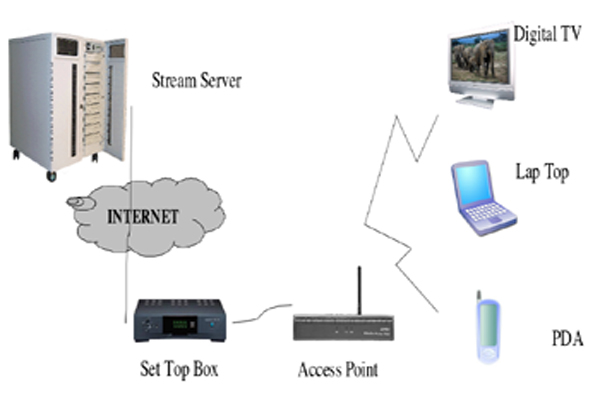
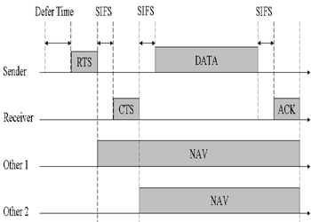
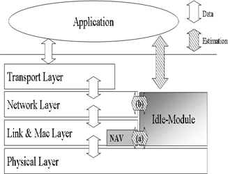
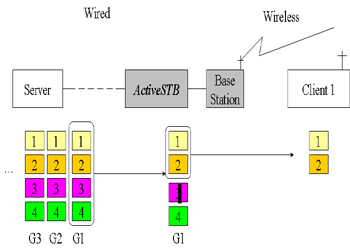
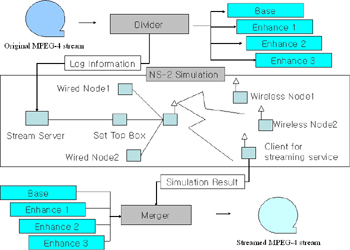

Multimedia Streaming Services
High Performance Computing Laboratory
The rapid growth of new wireless and mobile devices accessing the internet has contributed to a whole new level
of heterogeneity in multimedia communications. In particular, in home networks have also increased in
heterogeneity by using various devices such as laptops, cell phone, PDAs, and an increasing array of
connected consumer home-based electronic devices. These home-based heterogeneous connections require
efficient distribution of shared network resources which is a major concern for the transport of stored video.
One challenge is to quickly and precisely estimate the available bandwidth for the decision of streaming rates
of layered and scalable multimedia services.
Previous works based on wired networks are too burdensome to be applied to multimedia applications
in wireless networks. In our study, a set-top box is the access pointer between the internet and a home network.
We aim to design a set-top box performing flow control of a home network and quality adaptation to match the
delivered stream quality to the available bandwidth. We propose an ActiveSTB which has a capability of buffering
and quality adaptation based on the estimation for the available bandwidth in the wireless LAN.
| Streaming Service in Wireless LAN |
|  |
Estimation of Available Bandwidth
The popularity of multimedia streaming services via wireless networks presents major challenges in the
management of network bandwidth. One challenge is to quickly and precisely estimate the available
bandwidth for the decision of streaming rates of layered and scalable multimedia services. Previous
works based on wired networks are too burdensome to be applied to multimedia applications in wireless
networks. In this project, a new method, IdleGap, is suggested to estimate the available bandwidth of
a wireless LAN based on the information from a low layer in the protocol stack.
In a wireless network, the IEEE 802.11 protocol in Distributed Co-ordination Function (DCF) mode, based
on CSMA/CA algorithm, is becoming very popular usng network allocation vector (NAV). Previous works based
on the bandwidth estimation of wired environments are not applicable to wireless networks that use the
DCF protocol. Multimedia streaming is a soft real-time service where each frame is delay-sensitive.
We propose to add an Idle-Module in the MAC layer of a node in the network that to get the available
bandwidth in wireless networks.
| Estimation of Available Bandwidth |
|  |
 |
| Network Allocation Vector |
Idle Module |
Quality Adaptation in Wireless Networks
The popularity of multimedia streaming services via wireless home networks has confronted major challenges
in quality improvement for services through a set-top-box (STB). Even though scalable methods have been
suggested to enhance the quality of streaming services, it is still challenging how to use scalable
streaming services in wireless home networks. Previous studies on the scalable streaming services drop the
corrupted stream at the multimedia client. In this porject, we propose a new method, ActiveSTB, which drops
the distorted or unsuitable multimedia data early to save frugal resources.
In scalable streaming services, it is very critical for the STB to know the available wireless network
bandwidth. The A STB serves as a bottleneck the server and heterogeneous client devices, and the bottleneck
determines the quality of a delivered stream to each clients. Thus an STB must efficiently distribute the
buffered requested scalable streams to heterogeneous clients. The goal of our ActiveSTB will be to drop
dispensable streams to provide the multimedia stream with best quality and additionally simultaneously
perform quality-adaptation to the available bandwidth.
| Active Set Top Box |
|  |
 |
| Drop Dispensable Streams |
Simulation Environments |
Sensor Networks
Along with energy conservation, it has been a critical issue to maintain a desired degree of coverage in wireless
sensor networks (WSNs), especially in a mobile environment. By enhancing a variant of Random Waypoint (RWP) model,
we propose Mobility Resilient Coverage Control (MRCC) to assure K-coverage in the presence of mobility. Our basic
goals are 1) to elaborate the probability of breaking K-coverage with moving-in and moving-out probabilities, and
2) to issue wake-up calls to sleeping sensors to meet user requirement of K-coverage even in the presence of mobility.
Furthermore, by separating the mobility behavior into average and individual, the probability of breaking K-coverage
can be precisely calculated, hence reducing the number of sensors to be awakened.
Papers
- "ROAL: A Randomly Ordered Activation and Layering Protocol for Ensuring K-Coverage in Wireless Sensor Networks," Journal of Networks (JNW), Vol. 3, No. 1, pp. 43-52, Jan 2008. ( pdf )
- "Bandwidth Estimation in Wireless LANs for Multimedia Streaming Services," Advances in Multimedia, vol. 2007, Article ID 70429, 7 pages, 2007. (pdf )
- "Design of Active Set Top Box in a Wireless Network for Scalable Streaming Services," in Proceedings of the 2007 International Conference on Image Processing (ICIP), San Antonio, 2007. ( pdf )
- "Assuring K-Coverage in the Presence of Mobility in Wireless Sensor Networks," in Proceedings of IEEE GLOBECOM2006, selected for best papers. ( pdf )
- "Bandwidth Estimation In Wireless LANs For Multimedia Streaming Services," in Proceedings of the 2006 International Conference on Multimedia & Expo (ICME), Toronto, 2006 ( pdf )
- "Power Management in RAID Server Disk System Using Multiple Idle States," in the Proceedings of International Workshop on Unique Chips and Systems (UCAS) 2005. ( pdf )
- "Power Mangement in Disk Storage System with Multiple RPMs," poster presentation in the Fourth Annual Austin Conference on Energy-efficient Design, 2005.
|